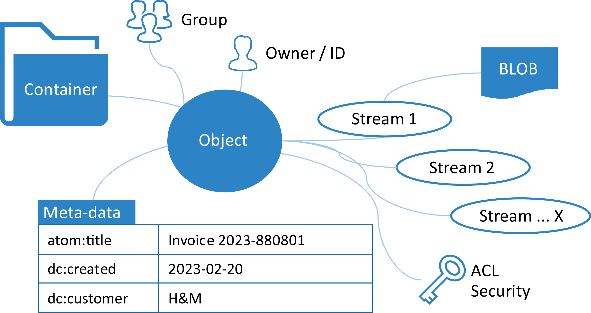

If everything from enterprise to productivity applications should be possible to build on the platform, a versatile data model is required. As most XML writers are used to create XML documents, for instance an XML document describing an invoice, a calendar event, or a contact, these XML document represent repeating collections of data, like multiple calendar event documents. The data model thereby needs to be able to manage repeating XML documents – collections of documents.
The data model layer also needs to be able to extract meta-data that should be searchable to not require applications to open every single XML document and parse them to find what to display or search for. This means that the data model needs some sort of data-type definitions that can be associated with any XML application and defines how to apply meta-data extraction, what to do if such a document is opened – or any appropriate action on the document. The data types can also allow other meta-data to an XML application to be added like for instance a default icon, namespace definition, file extension, and mime type.
Figure 3. XML-based data model abstraction using containers and objects
|  |
We came up with a data model based on containers and objects, where containers can be hierarchical and objects can have zero to many streams associated with them, ranging from binary objects to XML documents. In its simplest form, a container is equivalent to a folder in a normal file system, and an object with one stream in the form of an XML document would be like a normal XML document stored in a file system. Objects can then also have additional metadata like key/value data associated with it to be searchable, either external file data like the name, creation date, filename, and access rights, or extracted data from within the document itself. This makes it easy to “attach” binary file formats to a XML document, as the binary additions are additional streams to the XML document object.
Querying a container returns an answer in the form of an Atom XML document according to the Atom Syndication Format by the IETF AtomPub Working Group. This format is extended using our own namespace to add capabilities to return containers in addition to objects described by atom:entry elements.
When creating software applications there is often the need to work with relational databases as data sources or to move data from relational databases into the data model. This can be done by mapping tables to containers, with the added benefit of getting hierarchical containers, and rows to objects. Columns are achieved with key/value meta-data, and complex column fields are done by storing entire XML documents as streams to the object. Binary BLOB fields can also be stored as streams.
Figure 4. Mapping relational data to the XML data model
The data model may be cached in-memory of the browser or persisted to disk using the local store technology of web browsers. Any changes to the data model are done through the platform abstractions and not directly on the XML DOM objects. This allows the browser-based transaction manager to coordinate changes to the user interface as well as to the cloud where a transaction coordinator is located that coordinates transactions across users and connected devices. It also allows applications to continue to work with the data model if the network temporarily goes down or if the application is used in an offline scenario. If the browser is closed, any uncommitted transactions may be first written to disk.
Any application working with the data model automatically becomes capable of collaboration and simultaneous editing across multiple connected web browsers (single user with multiple screens or across several users), as any data changes automatically are coordinated through XML delta-changes while the data model keeps track of all identities simultaneously working with the same XML document.
This adds another fundamental perspective to the data model. It is aware of the identities of authenticated users and can keep security based on Access Control Lists (ACL), roles, and groups across containers and objects. It also opens up the possibility to share containers and/or objects between identities and/or groups.
The data model’s cloud-based counterpart can be any implementation adhering to the same XML-based communication channel API on the Device Edge Application Platform or it can be any existing web API using SOAP, REST, MQTT, GraphQL etc. adapted to the internal data model through client-side protocol adapters.
From an application’s point of view, the entire data model is simply a set of file systems with XML documents, all accessed through Unique Resource Identifiers (URIs). This abstracts where data is located, how it is updated and saved, and what the underlying representation is. Every single piece of data can be accessed through a URI and an XPath. The drawback of course that for all non-XML data sources the data has to be transformed through a bijective function which increases overhead and can cause a trade-off between data loss and the usefulness of the XML representation from the bijective function. This is however in real life not an issue, as most data that is not in XML format is in JSON or GraphQL, which only provides a sub-set of the descriptive powers of XML.
To determine the set of required server-side capabilities and validate APIs a large amount of client applications representing the full suite of productivity and social applications of a typical desktop computer were developed. This resulted in around 100 server APIs that together implemented support for the data model. They are covering user management, communication, data storage, collaboration, messaging, and more.
Figure 5. Cloud-based support in the form of an XML repository serving the data model